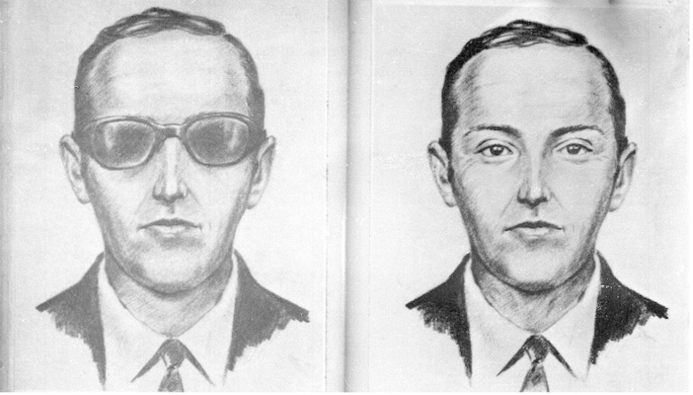

D.B. Cooper
D.B. Cooper was an unidentified man who hijacked Northwest Orient Airlines Flight 305, which is a Boeing 727 aircraft, in US airspace on the 24th of November, 1971.
During the flight, the hijacker told a flight attendant he was armed with a bomb, then demanded $200,000 in ransom money. Equivalent to $1,400,000 in 2022, then requested four parachutes once they landed in Seattle.
Once landing in Seattle, the hijacker agreed to let go of the passengers on board, then instructed the flight crew to refuel the aircraft and fly to Mexico City, refuelling in Reno, Nevada along the way.
About 30 minutes after taking off from Seattle, the hijacker opened the aircraft's aft door, deployed the staircase, and parachuted into the night over Washington. The hijacker has never been found or identified.
In 1980, a small amount of the ransom money was found along the banks of the Columbia River. The discovery of the money gave the case more attention once again but no additional information about the hijackers identity or fate was ever discovered, and the remaining money was never found.